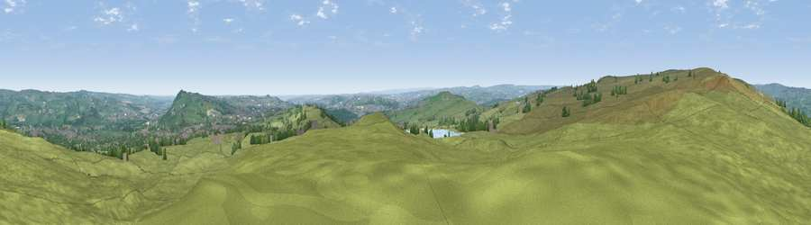

Viewpoint near Hawksworth
#9754 in England · top 6% of its area beats it · near HawksworthWhere it is
The exact computed spot (SE 15225 43425). Click the marker for map links.
The view, rendered

A 360° render of this exact spot computed from the terrain model, tree cover and land cover — summer colours, afternoon light, calibrated against photographs of famous viewpoints. Real trees, hedges and buildings will differ in detail.
The panorama
Grey silhouette: terrain skyline in each direction (720 bearings, Earth curvature and refraction included). Dashed green: skyline with trees (+15 m) and buildings (+8 m) as obstacles. Blue strip: how far the ground is visible on each bearing.
Where the view opens
Wedge length = distance to the farthest visible ground on that bearing (vegetation-aware). Rings at 10, 25 and 50 km.
What fills the view
86% grassland · 8% woodland · 4% built-up ·
Angular shares of the visible panorama (visual magnitude), not map area. Landscape diversity 0.23 (0–1 Shannon).
Key numbers
More beautiful places nearby
The staircase of upgrades: each row has a higher view potential than everything closer. Driving times are estimates from straight-line distance, calibrated against real road routing — check an actual route before setting out.
| Place | Direction | Drive | Score |
|---|---|---|---|
| Viewpoint near Burley-in-Wharfedale | NW · 2 km | ~5 min | 66.5 |
| Viewpoint near Baildon | SSW · 4 km | ~9 min | 70.4 |
| Viewpoint near Otley | E · 5 km | ~11 min | 77.5 |
| Viewpoint near East Witton | N · 41 km | ~61 min | 77.8 |
| Little Ingleborough | NW · 51 km | ~72 min | 78.8 |
| Hood Hill | NE · 52 km | ~73 min | 79.6 |
| Darwen Hill | WSW · 52 km | ~73 min | 80.7 |
| Viewpoint near Thirlby | NE · 53 km | ~75 min | 81.5 |
53.88679, -1.76985 · source: screening · position refined by local search. Computed location — check access rights before visiting.